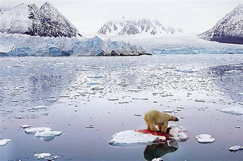

Nosso objetivo aqui é conscientizar as pessoas a respeito de nosso planeta e buscar soluções, meios e/ou intervenções para mudar esse cenário! Você está comigo?
Infelizmente, situações como essas abaixo são de cortar o coração...
Ola,
O Aquecimento Global é um problema ambiental que ocorre em quase todo o Planeta. Basicamente consiste no aquecimento da temperatura média dos oceanos e do ar da superfície. O resultado disso são variações climáticas em todo o seu seguimento, regiões com um certo clima começa a sofrer variações de temperatura, clima, etc.
O grande vilão desse problema ambiental é em toda parte o próprio homem. O aumento da temperatura começou a ser questionado apenas na metade do século XX. Foram feitos estudos e comprovaram que a queima de combustíveis fósseis e o desmatamento exagerado dos meios ambientes resulta em uma forte modificação da temperatura, consequentemente variando todo o clima da Terra.
Segundo o Quarto Relatório de Avaliação do Painel Intergovernamental sobre Mudanças Climáticas, ocorrido em 2007, a temperatura na superfície terrestre aumentou 0,74 ± 0,18 ºC durante o último século.
Ainda modelos climáticos feitos pelo IPCC indicam que temperaturas quase que certo aumentaram daqui a quase cem anos. Entre 1990 e 2100 poderá aumentar entre 1,1 e 6,4 ºC. Com efeito espera-se que o aquecimento provoque o aumento no nível do mar por mais de um milênio, mesmo se o homem consiga estabilizar a concentração de gases estufa.
Segue links que podem te ajudar a ter mais conhecimento e disseminar a cultura sustentável!